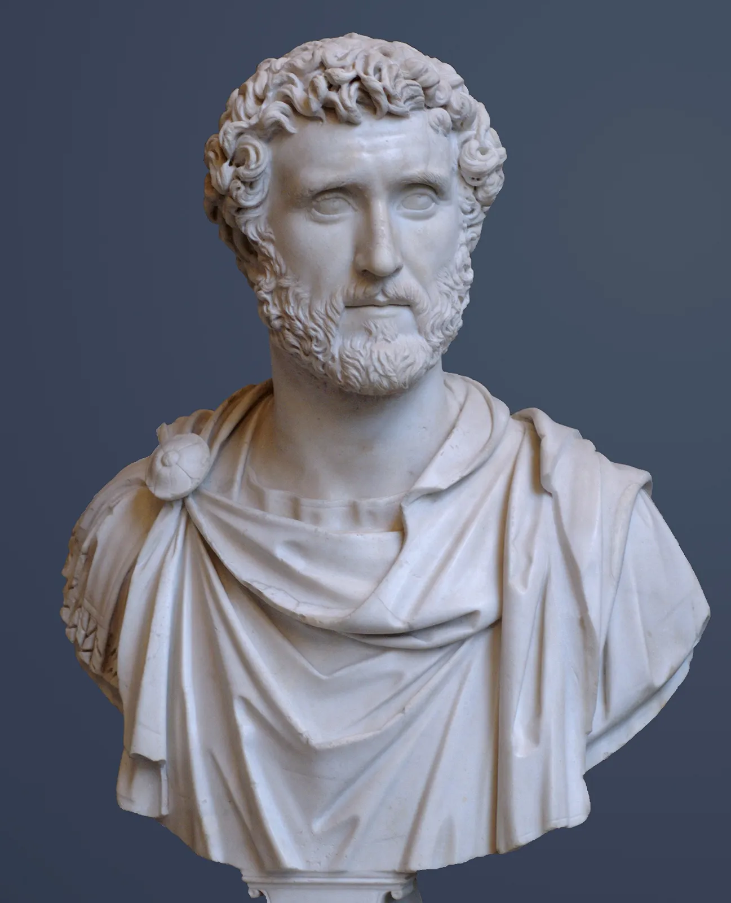

Antoninus's Early Life
Antoninus was born in Italy in the year 86 to his father Titus Aurelius Fulvus, a Consul, and his wife Arria Fadilla. Not much is known about his early years, but what is known is as a young man he was married somewhere between 110 and 115, with this marriage giving him four children, two sons and two daughters. It's said he was deeply in love with his wife and when she passed he printed coins with her portrait and the words "DIVA FAUSTINA" on them. Antoninus held multiple offices including quaestor and praetor before being granted his consulship in 120 before finally being a proconsul of both Italia and Asia. After the death of Hadrian's first adopted son he had to choose between the young Marcus Aurelius or Antoninus, and decided on Antoninus as a safe option. Despite minor opposition Antoninus became Emperor in 138.
Antoninus as Emperor
Despite having the second longest reign of any Roman Emperor at 23 years, there is not much to be said about it. Antoninus is a unique Emperor in that he never left Italy to deal with any of the minor uprisings and wars that occured and his reign was the most peaceful of any Emperor of Rome which is quite the achievment. It should be noted that the Antonine Wall in Scotland was made under his orders. When it comes to the economy of Rome, Antoninus did something very rare in that he left a surplus of funds for the next Emperor and also would not tax cities affected by natural disasters. In terms of the legal side of the Empire he also seemed to be a more kind ruler than most, passing acts for the enfranchisement of slaves, implemented the "innocent until proven guilty" principle, and lowered the use of torture. Finally on one last note something extremely interesting happened during his reign and that is a mission to China. While the mission was made up of merchants and only made contact in 166, 5 years after Antoninus's deather, it is the first confirmed contact between Rome and China and was more than likely sent by Antoninus.
Death and Legacy
Compared to some previous Emperor's, Antoninus has an oddly in depth description of his last days with his biographer stating two days before his death he was at his estate, and the night before his death he "ate alphine gruyere cheese greedily" before vomiting and falling sick the next day. Before passing he made sure the state and his daughter would be given to Marcus Aurelius and passed away in his sleep that night. While the majority of knowledge we have of Antoninus comes from dubious at best works, amongst ancient Romans and later historians he still seems to be held in high regard.